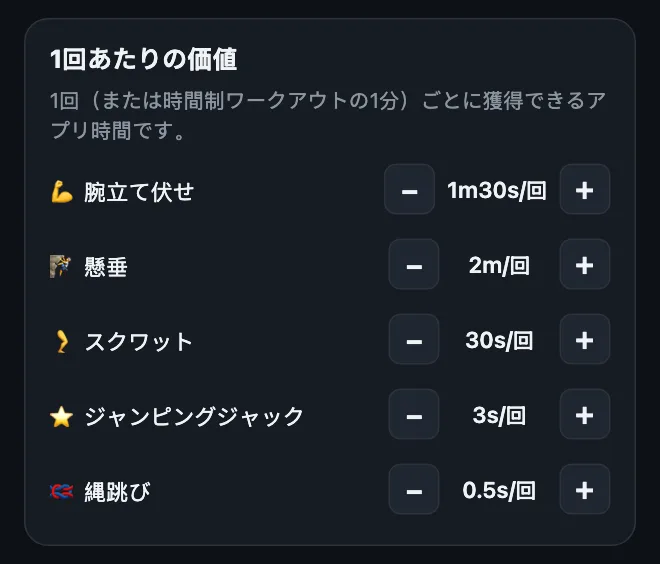

腕立て伏せ1回、スクリーンタイム何分にする？
どうも！HonorFitでは、記録した1回ごとにアプリ時間が手に入って、その値段は自分で決められます。設定を終えた人からいちばんよく聞かれるのが、「腕立て伏せ1回はいくらにすればいいの？」という質問です。1分？10秒？僕の考え方を紹介します。
初期設定の値
何も触らなければ、こうなっています。
| エクササイズ | 初期設定の獲得時間 |
|---|---|
| 💪 腕立て伏せ | 1回ごとに1分 |
| 🧗 懸垂 | 1回ごとに1分30秒 |
| 🔥 腹筋、🦵 スクワット | 1回ごとに30秒 |
| 自分で追加したエクササイズ | 1回ごとに30秒 |
| 時間制ワークアウト（ウォーキング、ヨガ、HIIT） | 1分ごとに30秒 |
| 距離制ワークアウト | 1kmごとに5分、または1マイルごとに8分 |
| 👟 歩数 | 1,000歩ごとに3分 |
つまり、腕立て伏せ20回でInstagram 20分です。最初はこれくらいでちょうどいい人が多いですが、甘すぎる人も、厳しすぎる人もいます。あなたはどっちでしょう？
1行でできる決め方
2つの数字を考えてみてください。
- 普通の日に、ブロックしているアプリをどれくらい使えたらOKだと感じますか？理想ではなく、正直な数字で。
- そのために、1日を通して実際に何回できますか？
あとは割り算です。1回あたりの価値 = 時間 ÷ 回数。腕立て伏せ60回でTikTok 1時間がいいなら、1回1分。同じ1時間でも、スクワットなら120回いけるなら、スクワット1回30秒。本当にこれだけです。
2つ目の答えが「あまりできない」でも大丈夫です。1回の値段を高めにして、デイリーベース（設定、無料）を使えば、毎日ある程度の時間が貯金された状態でスタートできます。
そのまま使える設定例
| エクササイズ | 1回ごとの獲得 | 1セットで稼げる時間 |
|---|---|---|
| 腕立て伏せ（初心者） | 1分30秒 | 10回 = 15分 |
| 腕立て伏せ（もう慣れてきた人） | 30秒 | 40回 = 20分 |
| ジャンピングジャック | 3秒 | 100回 = 5分 |
| 縄跳び（1回跳ぶごと） | 0.5秒 | 600回 = 5分 |
| 懸垂 | 2分 | 5回 = 10分 |
| ランニング（距離） | 1kmごとに6分 | 5km = 30分 |
法則はこうです。1回が楽で速いほど、価値は低くするべき。ジャンピングジャックは1回1秒くらいなので、懸垂1回と同じだけ稼げるのはおかしいですよね。
1.18.0で−/+ボタンが細かくなりました
少し前までは最小値が5秒だったので、すごく速い種目（縄跳び、ジャンピングジャック）は値段をつけにくく、3分から10分に上げるのもひと苦労でした。あるユーザーさんがその両方についてメールをくれたので、1.18.0では−/+ボタンが賢い刻みで動くようにしました。
- 5秒未満：4秒、3秒、2秒、1秒、そのあと0.5秒、0.25秒、0.1秒。
- 5秒〜1分：5秒刻み。
- 1〜3分：15秒刻み。
- 3〜10分：30秒刻み。
- 10分以上：1分刻み。
このボタンは2か所にあります。
- 設定 → 1回あたりの価値：エクササイズごとに−/+の行が1つずつ。値段をちょっと変えたいだけなら、ここがいちばん早いです。
- 設定 → エクササイズ → 編集：フルの編集画面です。エクササイズの追加、名前の変更、削除や、回数・分・距離の切り替えもここでできます。詳しい手順はHonorFitのエクササイズをカスタマイズする方法にまとめています。

値段が合っていないサイン
- やっていない回数を記録しそうになる。時間の値段が高すぎます。自己申告制が何かを教えてくれているんです。そうしたくならなくなるまで、値を1段階ずつ上げましょう。
- 残高がいつまでもなくならない。時間の値段が安すぎます。値を1〜2段階下げるか、ブロックするアプリをもう1つ増やしましょう。
- 回数はこなすけど、イヤイヤやっている。たぶん値段ではなく、エクササイズが合っていません。嫌いじゃない種目に替えましょう。ウォーキングもカウントされますし、体にやさしい運動でもOKです。
- 何時間も貯めて、夜に全部使ってしまう。深夜0時にリセット（無料）をオンにすれば、使わなかった時間が積み上がりません。
新しい設定にしたら、また変える前に1週間くらい様子を見てください。最初の数日は、どんな設定でも違和感があるものです。
ハードモードと体調不良モード
いつもの設定が合わない日のために、ホーム画面の上部に💀 ハードボタンを置けます（設定 → ハード／体調不良モード、無料）。1回タップすると、1回あたりの獲得が半分になります。もう1回タップすると🤒 体調不良モードになって、1回あたりの獲得が2倍に。体調がすぐれない日向けです。さらにタップすると元に戻ります。設定した値そのものは変わらないので、元に戻す作業もいりません。
トレーナーではありません：僕はアプリを作っている人で、コーチではありません。痛みが出るエクササイズはやめてください。ケガや持病がある人は、自分の体をよく知っている人に、何が合っているか相談してください。そのうえで、それに合わせてHonorFitを設定しましょう。
HonorFit Blockerは、iPhoneとAndroid向けの無料アプリブロッカーです。エクササイズも、その価値も、自分で決められます。自己申告制で、カメラは使わず、データはスマホの外に出ません。